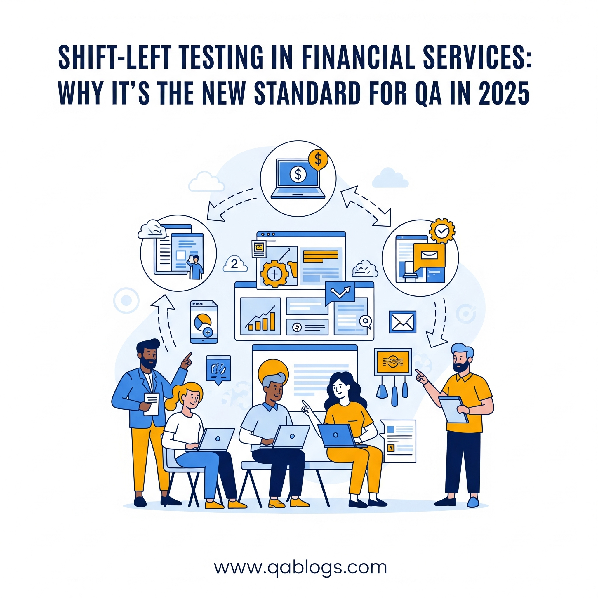

Shift-Left Testing in Financial Services: Why It's the New Standard for QA in 2025

Key Takeaways
- Learn why shift-left testing is becoming essential in financial services
- Discover practical implementation strategies for QA teams
- Understand the benefits and challenges of early testing
- Explore real-world applications and success stories
In 2025, the financial services industry is under immense pressure to deliver secure, compliant, and high-quality software at an unprecedented pace. With rising cyber threats, stricter regulations, and the demand for rapid innovation, Quality Assurance (QA) teams are turning to shift-left testing as a game-changing strategy. A June 6, 2025, post on X by @QA_financial highlighted this trend, noting that shift-left testing is becoming a cornerstone in banking and financial services to ensure early defect detection and compliance. This blog on QA Blogs explores why shift-left testing is the new standard for QA in financial services, its benefits, challenges, and practical steps for implementation—all optimized for SEO to reach QA professionals and financial tech enthusiasts.
What is Shift-Left Testing?
Shift-left testing is a methodology that integrates QA processes earlier in the software development lifecycle (SDLC), moving testing from the traditional end-of-cycle phase to the design and coding stages. Instead of waiting until development is complete, QA teams collaborate with developers from the start to identify and fix issues early.
- Traditional Approach: Testing happens after coding, often leading to late defect discovery and costly rework.
- Shift-Left Approach: Testing begins during requirements analysis and continues through development, catching defects before they escalate.
In financial services, where software reliability and security are non-negotiable, shift-left testing ensures quality is baked into the product from the ground up.
Why Shift-Left Testing is Critical for Financial Services in 2025
Financial services face unique challenges that make shift-left testing a necessity in 2025:
1. Stricter Regulatory Demands
Regulations like GDPR, PCI DSS, and CCPA are tightening, with regulators demanding robust end-to-end testing to ensure compliance. A June 4, 2025, X post by @QA_financial referenced a Manulife executive stating that regulators now expect financial systems to be thoroughly tested for compliance risks.
- Impact: Shift-left testing identifies compliance issues—like data privacy violations—early, reducing the risk of fines.
- Example: Testing a payment gateway for PCI DSS compliance during the design phase ensures secure data handling before coding begins.
2. Rising Cybersecurity Threats
Cyberattacks targeting financial systems are surging, with a 2025 IBM Security report noting a 30% increase in breaches in the sector. Vulnerabilities in software can lead to costly data leaks or fraud.
- Impact: Shift-left testing integrates security checks early, catching vulnerabilities like SQL injection during coding rather than post-deployment.
- Example: Using static code analysis to detect insecure API endpoints before they're built into a banking app.
3. Demand for Speed and Innovation
Financial services are adopting Agile and DevOps to deliver features faster—think mobile banking apps or real-time trading platforms. A 2025 Forrester report found that 65% of financial firms now aim for weekly releases.
- Impact: Shift-left testing supports rapid cycles by minimizing late-stage defects, ensuring quality doesn't slow down innovation.
- Example: Testing user stories for a new payment feature during sprint planning prevents delays in the release schedule.
4. Complex System Architectures
Modern financial applications often rely on microservices, cloud infrastructure, and third-party APIs, increasing the risk of integration failures.
- Impact: Shift-left testing validates integrations early, ensuring components work together seamlessly from the start.
- Example: Testing API contracts between a banking app and a third-party payment processor during development.
Benefits of Shift-Left Testing for QA Teams
Adopting shift-left testing in financial services offers significant advantages for QA teams in 2025:
- Early Defect Detection: Catching bugs during design or coding reduces rework costs, which a 2025 Capgemini study estimates can be 5x higher if found post-release.
- Enhanced Security: Early vulnerability scans ensure compliance with regulations and protect against cyber threats.
- Improved Collaboration: QAs work closely with developers, fostering a shared responsibility for quality and breaking down silos.
- Faster Delivery: Fewer late-stage defects mean smoother, faster release cycles, critical for Agile/DevOps environments.
- Better User Experience: Early testing ensures features align with user needs, reducing the risk of costly post-launch fixes.
Challenges of Adopting Shift-Left Testing
While the benefits are clear, QA teams may face hurdles when implementing shift-left testing:
- Cultural Resistance: Teams accustomed to traditional workflows may resist moving QA earlier, requiring a mindset shift.
- Skill Gaps: QAs need to learn new tools (e.g., static code analysis) and collaborate more with developers, which can be daunting.
- Tool Integration: Incorporating early testing tools into existing CI/CD pipelines can be complex, especially in legacy financial systems.
- Time Constraints: Early testing requires more upfront effort, which can feel challenging in fast-paced sprints.
How QA Teams Can Implement Shift-Left Testing in Financial Services
Here's a step-by-step guide for QA teams to adopt shift-left testing effectively in 2025:
1. Collaborate Early with Developers
Shift-left testing thrives on teamwork. Engage with developers from the requirements phase to ensure quality is prioritized.
- How to Do It: Attend sprint planning sessions, review user stories, and provide input on testability.
- Example: For a new loan application feature, suggest edge cases (e.g., invalid credit scores) during design discussions.
- Tool: Use Jira to track requirements and collaborate on user stories.
2. Leverage Static Code Analysis Tools
Static code analysis tools scan code for defects and vulnerabilities before it's fully built, aligning with shift-left principles.
- Tools to Try: SonarQube for code quality, Snyk for security vulnerabilities.
- How to Start: Integrate SonarQube into your CI/CD pipeline to scan code during development, flagging issues like null pointer exceptions.
- Benefit: Catches bugs early, reducing the need for extensive manual testing later.
3. Integrate Security Testing Early
Security is paramount in financial services, so incorporate security checks from the start.
- Tools to Try: OWASP ZAP for vulnerability scanning, Snyk for dependency checks.
- How to Do It: Run OWASP ZAP on APIs during development to detect issues like insecure data transmission.
- Benefit: Ensures compliance with regulations like PCI DSS, minimizing security risks.
4. Automate Unit and API Testing
Automating tests early in the SDLC ensures quick feedback and reduces manual effort.
- Tools to Try: JUnit for unit testing, Postman for API testing.
- How to Start: Write JUnit tests for core banking functions (e.g., balance calculations) as developers code them.
- Benefit: Provides immediate validation, catching defects before integration.
5. Test User Stories During Development
Shift-left testing involves validating requirements as they're built, not just at the end.
- How to Do It: Create test cases tied to user stories and execute them during sprints.
- Example: For a user story about transferring funds, test the feature incrementally as each component (e.g., UI, backend) is developed.
- Tool: Use TestRail to manage and track test cases aligned with user stories.
6. Start Small with a Pilot Project
If your team is new to shift-left, begin with a small, low-risk project to build confidence.
- How to Start: Choose a single microservice (e.g., a payment validation module) and apply shift-left practices, then scale to larger projects.
- Benefit: Minimizes disruption while allowing your team to learn and refine the process.
7. Upskill Through Training and Communities
Shift-left testing requires new skills, so invest in learning and collaboration.
- Resources: Take Coursera's "DevOps and Software Engineering" course, or join Reddit's r/QualityAssurance for peer insights.
- What to Learn: Basics of CI/CD, static code analysis, and security testing.
- Tip: Dedicate 1 hour weekly to learning—consistency pays off!
Real-World Applications in Financial Services
Shift-left testing is already making an impact in financial services in 2025:
- Banking Apps: A major bank used shift-left testing to validate a new mobile app feature for real-time fraud detection, catching security flaws during development and ensuring compliance with PCI DSS.
- Trading Platforms: A trading firm adopted shift-left to test microservices for low-latency transactions, reducing production failures by 25%, per a 2025 case study.
- Insurance Systems: An insurer integrated shift-left testing to verify API integrations for claims processing, ensuring seamless user experiences from the start.
How Shift-Left Complements 2025 Trends
Shift-left testing aligns with other QA trends in 2025, amplifying its impact:
- DevSecOps: Shift-left embeds security (the "Sec" in DevSecOps) early, critical for financial systems.
- AI-Driven Testing: AI tools can enhance shift-left by predicting defects during coding, complementing manual efforts.
- CI/CD Pipelines: Shift-left integrates seamlessly with CI/CD, enabling continuous testing in Agile environments.
FAQs
What is shift-left testing?
Shift-left testing moves QA processes earlier in the SDLC, starting during design and coding to catch defects early.
Why is shift-left testing critical for financial services?
It ensures compliance with regulations, enhances security, and supports rapid, reliable releases in a high-stakes industry.
What tools support shift-left testing in financial QA?
Tools like SonarQube (static code analysis), Snyk (security), Postman (API testing), and OWASP ZAP (vulnerability scanning) are ideal.
How can QAs overcome resistance to shift-left testing?
Start small with a pilot project, train the team on new tools, and demonstrate early wins to build buy-in.
Conclusion
Shift-left testing is redefining QA in financial services in 2025, offering a proactive approach to ensure security, compliance, and quality in an industry where stakes are high. By catching defects early, enhancing collaboration, and supporting rapid releases, this methodology is becoming the new standard for QA teams. Start by collaborating with developers, leveraging tools like SonarQube and OWASP ZAP, and piloting shift-left on a small project to see its impact firsthand. As financial systems grow more complex, adopting shift-left testing will position your team to deliver reliable, user-focused software with confidence.
Ready to transform your QA process with shift-left testing? Share your experiences in the comments, and explore more QA trends on QA Blogs!
Join Our Community of QA Professionals
Get exclusive access to in-depth articles, testing strategies, and industry insights. Stay ahead of the curve with our expert-curated content delivered straight to your inbox.
Nikunj Mistri
Founder, QA Blogs
About the Author